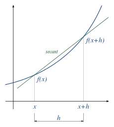

Numerical differentiation is used to estimate the derivative of a mathematical function using values of the function and perhaps other knowledge about the function.
FSharp.Stats implements a three point differentiation method. This method takes a set of values and their function values. For a given value xT of the set, one defines three other points which should be considered to calculate the differential at xT.
Here follows a small snippet.
First, we create our data. In this case our function is f(x) = x ^ 3.
open Plotly.NET
open FSharp.Stats
// x data
let xs = Array.init 100 (fun x -> float x / 8.)
// y data
let ys = Array.map (fun x -> x ** 3.) xs
Now we apply the threePointDifferentiation to every point starting with the second and ending with the second last. We can't do it for every point because for every point we need to have three other points in close proximity.
let y's =
[|
for i = 1 to xs.Length - 2 do
yield xs.[i],Integration.Differentiation.differentiateThreePoint xs ys i (i-1) (i) (i+1)
|]
We compare the resulting values with the values of the known differential f'(x) = 3x^2, here called g(x)
open Plotly.NET
let comparisonChart =
[
Chart.Point(xs,ys,Name = "f(x)")
Chart.Point(y's,Name = "f'(x)")
Chart.Point(Array.map (fun x -> x,(x ** 2.) * 3.) xs,Name = "g(x)")
]
|> Chart.combine
|> Chart.withTemplate ChartTemplates.lightMirrored
To calculate the approximation for the derivative, a Two-Point Differentiation calculates the difference of f(x) at x and f(x) at x+h and correlates it to h.
This will give better approximations the smaller h is.
The function uses two different mathematical approaches to decrease the error, one for h > 1. and one for h < 1.

open FSharp.Stats.Integration.Differentiation.TwoPointDifferentiation
open FSharp.Stats.Integration.Differentiation
let testFunction x = x**2.
let test1 = differentiate 0.5 testFunction 2.
//Result for test1 is: 4.00
let test2 = differentiate 3. testFunction 2.
//Result for test2 is: 7.00
let test3 = differentiate 0.1 testFunction 2.
//Result for test3 is: 4.00
- The correct result for test1 (f(x) = x**2.) is assumed to be 4.
- With a higher h (for test2 h = 3., compared to the 0.5 used in test1) the approximation error increases.
You can try and find an optimal h - value with the "differentiateOptimalHBy" - function.
This function uses the first h-value it assumes to give good results for the numerical differentiation calculation.
Due to this, possible error due to float precision is avoided.
In the following example this is not really necessary, as values are quite big.
let hArray = [|0.1 .. 0.1 .. 2.|]
let test4 = differentiateOptimalHBy hArray testFunction 2.
//Result for test4 is: 4.00
If you want to use a presuggested hArray then you can use the "differentiateOptimalH" function.
This function uses an array from 0.01 to 5e^-100 in [|0.01; 0.005; 0.001; 0.0005; 0.0001 ..|]-increments as hArray.
let test5 = differentiateOptimalH testFunction 2.
//Result for test5 is: 4.00
namespace FsMath
namespace Plotly
namespace Plotly.NET
module Defaults
from Plotly.NET
<summary>
Contains mutable global default values.
Changing these values will apply the default values to all consecutive Chart generations.
</summary>
val mutable DefaultDisplayOptions: Plotly.NET.DisplayOptions
Multiple items
type DisplayOptions =
inherit DynamicObj
new: unit -> DisplayOptions
static member addAdditionalHeadTags: additionalHeadTags: XmlNode list -> (DisplayOptions -> DisplayOptions)
static member addDescription: description: XmlNode list -> (DisplayOptions -> DisplayOptions)
static member combine: first: DisplayOptions -> second: DisplayOptions -> DisplayOptions
static member getAdditionalHeadTags: displayOpts: DisplayOptions -> XmlNode list
static member getDescription: displayOpts: DisplayOptions -> XmlNode list
static member getPlotlyReference: displayOpts: DisplayOptions -> PlotlyJSReference
static member init: [<Optional; DefaultParameterValue ((null :> obj))>] ?AdditionalHeadTags: XmlNode list * [<Optional; DefaultParameterValue ((null :> obj))>] ?Description: XmlNode list * [<Optional; DefaultParameterValue ((null :> obj))>] ?PlotlyJSReference: PlotlyJSReference -> DisplayOptions
static member initCDNOnly: unit -> DisplayOptions
...
--------------------
new: unit -> Plotly.NET.DisplayOptions
static member Plotly.NET.DisplayOptions.init: [<System.Runtime.InteropServices.Optional; System.Runtime.InteropServices.DefaultParameterValue ((null :> obj))>] ?AdditionalHeadTags: Giraffe.ViewEngine.HtmlElements.XmlNode list * [<System.Runtime.InteropServices.Optional; System.Runtime.InteropServices.DefaultParameterValue ((null :> obj))>] ?Description: Giraffe.ViewEngine.HtmlElements.XmlNode list * [<System.Runtime.InteropServices.Optional; System.Runtime.InteropServices.DefaultParameterValue ((null :> obj))>] ?PlotlyJSReference: Plotly.NET.PlotlyJSReference -> Plotly.NET.DisplayOptions
type PlotlyJSReference =
| CDN of string
| Full
| Require of string
| NoReference
<summary>
Sets how plotly is referenced in the head of html docs.
</summary>
union case Plotly.NET.PlotlyJSReference.NoReference: Plotly.NET.PlotlyJSReference
Multiple items
namespace FSharp
--------------------
namespace Microsoft.FSharp
namespace FSharp.Stats
val xs: float array
Multiple items
module Array
from FSharp.Stats
<summary>
Module to compute common statistical measure on array
</summary>
--------------------
module Array
from Microsoft.FSharp.Collections
--------------------
type Array =
new: unit -> Array
static member geomspace: start: float * stop: float * num: int * ?IncludeEndpoint: bool -> float array
static member linspace: start: float * stop: float * num: int * ?IncludeEndpoint: bool -> float array
--------------------
new: unit -> Array
val init: count: int -> initializer: (int -> 'T) -> 'T array
val x: int
Multiple items
val float: value: 'T -> float (requires member op_Explicit)
--------------------
type float = System.Double
--------------------
type float<'Measure> =
float
val ys: float array
val map: mapping: ('T -> 'U) -> array: 'T array -> 'U array
val x: float
val y's: (float * float) array
val i: int
property System.Array.Length: int with get
<summary>Gets the total number of elements in all the dimensions of the <see cref="T:System.Array" />.</summary>
<exception cref="T:System.OverflowException">The array is multidimensional and contains more than <see cref="F:System.Int32.MaxValue">Int32.MaxValue</see> elements.</exception>
<returns>The total number of elements in all the dimensions of the <see cref="T:System.Array" />; zero if there are no elements in the array.</returns>
namespace FSharp.Stats.Integration
module Differentiation
from FSharp.Stats.Integration
<summary>
In numerical analysis, numerical differentiation describes algorithms for estimating the derivative of a mathematical function using values of the function and perhaps other knowledge about the function.
</summary>
val differentiateThreePoint: xValues: float array -> yValues: float array -> idxT: int -> idx0: int -> idx1: int -> idx2: int -> float
<summary>Three-Point Differentiation Helper</summary>
<remarks></remarks>
<param name="xValues">Sample Points t</param>
<param name="yValues">Sample Values x(t)</param>
<param name="idxT">Index of the point of the differentiation.</param>
<param name="idx0">idx0 Index of the first sample.</param>
<param name="idx1">Index of the second sample.</param>
<param name="idx2">Index of the third sample.</param>
<returns></returns>
<example><code></code></example>
val comparisonChart: GenericChart.GenericChart
type Chart =
static member AnnotatedHeatmap: zData: #('a1 seq) seq * annotationText: #(string seq) seq * [<Optional; DefaultParameterValue ((null :> obj))>] ?Name: string * [<Optional; DefaultParameterValue ((null :> obj))>] ?ShowLegend: bool * [<Optional; DefaultParameterValue ((null :> obj))>] ?Opacity: float * [<Optional; DefaultParameterValue ((null :> obj))>] ?X: 'a3 seq * [<Optional; DefaultParameterValue ((null :> obj))>] ?MultiX: 'a3 seq seq * [<Optional; DefaultParameterValue ((null :> obj))>] ?XGap: int * [<Optional; DefaultParameterValue ((null :> obj))>] ?Y: 'a4 seq * [<Optional; DefaultParameterValue ((null :> obj))>] ?MultiY: 'a4 seq seq * [<Optional; DefaultParameterValue ((null :> obj))>] ?YGap: int * [<Optional; DefaultParameterValue ((null :> obj))>] ?Text: 'a5 * [<Optional; DefaultParameterValue ((null :> obj))>] ?MultiText: 'a5 seq * [<Optional; DefaultParameterValue ((null :> obj))>] ?ColorBar: ColorBar * [<Optional; DefaultParameterValue ((null :> obj))>] ?ColorScale: Colorscale * [<Optional; DefaultParameterValue ((null :> obj))>] ?ShowScale: bool * [<Optional; DefaultParameterValue ((null :> obj))>] ?ReverseScale: bool * [<Optional; DefaultParameterValue ((null :> obj))>] ?ZSmooth: SmoothAlg * [<Optional; DefaultParameterValue ((null :> obj))>] ?Transpose: bool * [<Optional; DefaultParameterValue ((false :> obj))>] ?UseWebGL: bool * [<Optional; DefaultParameterValue ((false :> obj))>] ?ReverseYAxis: bool * [<Optional; DefaultParameterValue ((true :> obj))>] ?UseDefaults: bool -> GenericChart (requires 'a1 :> IConvertible and 'a3 :> IConvertible and 'a4 :> IConvertible and 'a5 :> IConvertible) + 1 overload
static member Area: x: #IConvertible seq * y: #IConvertible seq * [<Optional; DefaultParameterValue ((null :> obj))>] ?ShowMarkers: bool * [<Optional; DefaultParameterValue ((null :> obj))>] ?Name: string * [<Optional; DefaultParameterValue ((null :> obj))>] ?ShowLegend: bool * [<Optional; DefaultParameterValue ((null :> obj))>] ?Opacity: float * [<Optional; DefaultParameterValue ((null :> obj))>] ?MultiOpacity: float seq * [<Optional; DefaultParameterValue ((null :> obj))>] ?Text: 'a2 * [<Optional; DefaultParameterValue ((null :> obj))>] ?MultiText: 'a2 seq * [<Optional; DefaultParameterValue ((null :> obj))>] ?TextPosition: TextPosition * [<Optional; DefaultParameterValue ((null :> obj))>] ?MultiTextPosition: TextPosition seq * [<Optional; DefaultParameterValue ((null :> obj))>] ?MarkerColor: Color * [<Optional; DefaultParameterValue ((null :> obj))>] ?MarkerColorScale: Colorscale * [<Optional; DefaultParameterValue ((null :> obj))>] ?MarkerOutline: Line * [<Optional; DefaultParameterValue ((null :> obj))>] ?MarkerSymbol: MarkerSymbol * [<Optional; DefaultParameterValue ((null :> obj))>] ?MultiMarkerSymbol: MarkerSymbol seq * [<Optional; DefaultParameterValue ((null :> obj))>] ?Marker: Marker * [<Optional; DefaultParameterValue ((null :> obj))>] ?LineColor: Color * [<Optional; DefaultParameterValue ((null :> obj))>] ?LineColorScale: Colorscale * [<Optional; DefaultParameterValue ((null :> obj))>] ?LineWidth: float * [<Optional; DefaultParameterValue ((null :> obj))>] ?LineDash: DrawingStyle * [<Optional; DefaultParameterValue ((null :> obj))>] ?Line: Line * [<Optional; DefaultParameterValue ((null :> obj))>] ?AlignmentGroup: string * [<Optional; DefaultParameterValue ((null :> obj))>] ?OffsetGroup: string * [<Optional; DefaultParameterValue ((null :> obj))>] ?StackGroup: string * [<Optional; DefaultParameterValue ((null :> obj))>] ?Orientation: Orientation * [<Optional; DefaultParameterValue ((null :> obj))>] ?GroupNorm: GroupNorm * [<Optional; DefaultParameterValue ((null :> obj))>] ?FillColor: Color * [<Optional; DefaultParameterValue ((null :> obj))>] ?FillPatternShape: PatternShape * [<Optional; DefaultParameterValue ((null :> obj))>] ?FillPattern: Pattern * [<Optional; DefaultParameterValue ((false :> obj))>] ?UseWebGL: bool * [<Optional; DefaultParameterValue ((true :> obj))>] ?UseDefaults: bool -> GenericChart (requires 'a2 :> IConvertible) + 1 overload
static member Bar: values: #IConvertible seq * [<Optional; DefaultParameterValue ((null :> obj))>] ?Keys: 'a1 seq * [<Optional; DefaultParameterValue ((null :> obj))>] ?MultiKeys: 'a1 seq seq * [<Optional; DefaultParameterValue ((null :> obj))>] ?Name: string * [<Optional; DefaultParameterValue ((null :> obj))>] ?ShowLegend: bool * [<Optional; DefaultParameterValue ((null :> obj))>] ?Opacity: float * [<Optional; DefaultParameterValue ((null :> obj))>] ?MultiOpacity: float seq * [<Optional; DefaultParameterValue ((null :> obj))>] ?Text: 'a2 * [<Optional; DefaultParameterValue ((null :> obj))>] ?MultiText: 'a2 seq * [<Optional; DefaultParameterValue ((null :> obj))>] ?MarkerColor: Color * [<Optional; DefaultParameterValue ((null :> obj))>] ?MarkerColorScale: Colorscale * [<Optional; DefaultParameterValue ((null :> obj))>] ?MarkerOutline: Line * [<Optional; DefaultParameterValue ((null :> obj))>] ?MarkerPatternShape: PatternShape * [<Optional; DefaultParameterValue ((null :> obj))>] ?MultiMarkerPatternShape: PatternShape seq * [<Optional; DefaultParameterValue ((null :> obj))>] ?MarkerPattern: Pattern * [<Optional; DefaultParameterValue ((null :> obj))>] ?Marker: Marker * [<Optional; DefaultParameterValue ((null :> obj))>] ?Base: #IConvertible * [<Optional; DefaultParameterValue ((null :> obj))>] ?Width: 'a4 * [<Optional; DefaultParameterValue ((null :> obj))>] ?MultiWidth: 'a4 seq * [<Optional; DefaultParameterValue ((null :> obj))>] ?TextPosition: TextPosition * [<Optional; DefaultParameterValue ((null :> obj))>] ?MultiTextPosition: TextPosition seq * [<Optional; DefaultParameterValue ((true :> obj))>] ?UseDefaults: bool -> GenericChart (requires 'a1 :> IConvertible and 'a2 :> IConvertible and 'a4 :> IConvertible) + 1 overload
static member BoxPlot: [<Optional; DefaultParameterValue ((null :> obj))>] ?X: 'a0 seq * [<Optional; DefaultParameterValue ((null :> obj))>] ?MultiX: 'a0 seq seq * [<Optional; DefaultParameterValue ((null :> obj))>] ?Y: 'a1 seq * [<Optional; DefaultParameterValue ((null :> obj))>] ?MultiY: 'a1 seq seq * [<Optional; DefaultParameterValue ((null :> obj))>] ?Name: string * [<Optional; DefaultParameterValue ((null :> obj))>] ?ShowLegend: bool * [<Optional; DefaultParameterValue ((null :> obj))>] ?Text: 'a2 * [<Optional; DefaultParameterValue ((null :> obj))>] ?MultiText: 'a2 seq * [<Optional; DefaultParameterValue ((null :> obj))>] ?FillColor: Color * [<Optional; DefaultParameterValue ((null :> obj))>] ?MarkerColor: Color * [<Optional; DefaultParameterValue ((null :> obj))>] ?Marker: Marker * [<Optional; DefaultParameterValue ((null :> obj))>] ?Opacity: float * [<Optional; DefaultParameterValue ((null :> obj))>] ?WhiskerWidth: float * [<Optional; DefaultParameterValue ((null :> obj))>] ?BoxPoints: BoxPoints * [<Optional; DefaultParameterValue ((null :> obj))>] ?BoxMean: BoxMean * [<Optional; DefaultParameterValue ((null :> obj))>] ?Jitter: float * [<Optional; DefaultParameterValue ((null :> obj))>] ?PointPos: float * [<Optional; DefaultParameterValue ((null :> obj))>] ?Orientation: Orientation * [<Optional; DefaultParameterValue ((null :> obj))>] ?OutlineColor: Color * [<Optional; DefaultParameterValue ((null :> obj))>] ?OutlineWidth: float * [<Optional; DefaultParameterValue ((null :> obj))>] ?Outline: Line * [<Optional; DefaultParameterValue ((null :> obj))>] ?AlignmentGroup: string * [<Optional; DefaultParameterValue ((null :> obj))>] ?OffsetGroup: string * [<Optional; DefaultParameterValue ((null :> obj))>] ?Notched: bool * [<Optional; DefaultParameterValue ((null :> obj))>] ?NotchWidth: float * [<Optional; DefaultParameterValue ((null :> obj))>] ?QuartileMethod: QuartileMethod * [<Optional; DefaultParameterValue ((true :> obj))>] ?UseDefaults: bool -> GenericChart (requires 'a0 :> IConvertible and 'a1 :> IConvertible and 'a2 :> IConvertible) + 2 overloads
static member Bubble: x: #IConvertible seq * y: #IConvertible seq * sizes: int seq * [<Optional; DefaultParameterValue ((null :> obj))>] ?Name: string * [<Optional; DefaultParameterValue ((null :> obj))>] ?ShowLegend: bool * [<Optional; DefaultParameterValue ((null :> obj))>] ?Opacity: float * [<Optional; DefaultParameterValue ((null :> obj))>] ?MultiOpacity: float seq * [<Optional; DefaultParameterValue ((null :> obj))>] ?Text: 'a2 * [<Optional; DefaultParameterValue ((null :> obj))>] ?MultiText: 'a2 seq * [<Optional; DefaultParameterValue ((null :> obj))>] ?TextPosition: TextPosition * [<Optional; DefaultParameterValue ((null :> obj))>] ?MultiTextPosition: TextPosition seq * [<Optional; DefaultParameterValue ((null :> obj))>] ?MarkerColor: Color * [<Optional; DefaultParameterValue ((null :> obj))>] ?MarkerColorScale: Colorscale * [<Optional; DefaultParameterValue ((null :> obj))>] ?MarkerOutline: Line * [<Optional; DefaultParameterValue ((null :> obj))>] ?MarkerSymbol: MarkerSymbol * [<Optional; DefaultParameterValue ((null :> obj))>] ?MultiMarkerSymbol: MarkerSymbol seq * [<Optional; DefaultParameterValue ((null :> obj))>] ?Marker: Marker * [<Optional; DefaultParameterValue ((null :> obj))>] ?LineColor: Color * [<Optional; DefaultParameterValue ((null :> obj))>] ?LineColorScale: Colorscale * [<Optional; DefaultParameterValue ((null :> obj))>] ?LineWidth: float * [<Optional; DefaultParameterValue ((null :> obj))>] ?LineDash: DrawingStyle * [<Optional; DefaultParameterValue ((null :> obj))>] ?Line: Line * [<Optional; DefaultParameterValue ((null :> obj))>] ?AlignmentGroup: string * [<Optional; DefaultParameterValue ((null :> obj))>] ?OffsetGroup: string * [<Optional; DefaultParameterValue ((null :> obj))>] ?StackGroup: string * [<Optional; DefaultParameterValue ((null :> obj))>] ?Orientation: Orientation * [<Optional; DefaultParameterValue ((null :> obj))>] ?GroupNorm: GroupNorm * [<Optional; DefaultParameterValue ((false :> obj))>] ?UseWebGL: bool * [<Optional; DefaultParameterValue ((true :> obj))>] ?UseDefaults: bool -> GenericChart (requires 'a2 :> IConvertible) + 1 overload
static member Candlestick: ``open`` : #IConvertible seq * high: #IConvertible seq * low: #IConvertible seq * close: #IConvertible seq * [<Optional; DefaultParameterValue ((null :> obj))>] ?X: 'a4 seq * [<Optional; DefaultParameterValue ((null :> obj))>] ?MultiX: 'a4 seq seq * [<Optional; DefaultParameterValue ((null :> obj))>] ?Name: string * [<Optional; DefaultParameterValue ((null :> obj))>] ?ShowLegend: bool * [<Optional; DefaultParameterValue ((null :> obj))>] ?Opacity: float * [<Optional; DefaultParameterValue ((null :> obj))>] ?Text: 'a5 * [<Optional; DefaultParameterValue ((null :> obj))>] ?MultiText: 'a5 seq * [<Optional; DefaultParameterValue ((null :> obj))>] ?Line: Line * [<Optional; DefaultParameterValue ((null :> obj))>] ?IncreasingColor: Color * [<Optional; DefaultParameterValue ((null :> obj))>] ?Increasing: FinanceMarker * [<Optional; DefaultParameterValue ((null :> obj))>] ?DecreasingColor: Color * [<Optional; DefaultParameterValue ((null :> obj))>] ?Decreasing: FinanceMarker * [<Optional; DefaultParameterValue ((null :> obj))>] ?WhiskerWidth: float * [<Optional; DefaultParameterValue ((true :> obj))>] ?ShowXAxisRangeSlider: bool * [<Optional; DefaultParameterValue ((true :> obj))>] ?UseDefaults: bool -> GenericChart (requires 'a4 :> IConvertible and 'a5 :> IConvertible) + 2 overloads
static member Column: values: #IConvertible seq * [<Optional; DefaultParameterValue ((null :> obj))>] ?Keys: 'a1 seq * [<Optional; DefaultParameterValue ((null :> obj))>] ?MultiKeys: 'a1 seq seq * [<Optional; DefaultParameterValue ((null :> obj))>] ?Name: string * [<Optional; DefaultParameterValue ((null :> obj))>] ?ShowLegend: bool * [<Optional; DefaultParameterValue ((null :> obj))>] ?Opacity: float * [<Optional; DefaultParameterValue ((null :> obj))>] ?MultiOpacity: float seq * [<Optional; DefaultParameterValue ((null :> obj))>] ?Text: 'a2 * [<Optional; DefaultParameterValue ((null :> obj))>] ?MultiText: 'a2 seq * [<Optional; DefaultParameterValue ((null :> obj))>] ?MarkerColor: Color * [<Optional; DefaultParameterValue ((null :> obj))>] ?MarkerColorScale: Colorscale * [<Optional; DefaultParameterValue ((null :> obj))>] ?MarkerOutline: Line * [<Optional; DefaultParameterValue ((null :> obj))>] ?MarkerPatternShape: PatternShape * [<Optional; DefaultParameterValue ((null :> obj))>] ?MultiMarkerPatternShape: PatternShape seq * [<Optional; DefaultParameterValue ((null :> obj))>] ?MarkerPattern: Pattern * [<Optional; DefaultParameterValue ((null :> obj))>] ?Marker: Marker * [<Optional; DefaultParameterValue ((null :> obj))>] ?Base: #IConvertible * [<Optional; DefaultParameterValue ((null :> obj))>] ?Width: 'a4 * [<Optional; DefaultParameterValue ((null :> obj))>] ?MultiWidth: 'a4 seq * [<Optional; DefaultParameterValue ((null :> obj))>] ?TextPosition: TextPosition * [<Optional; DefaultParameterValue ((null :> obj))>] ?MultiTextPosition: TextPosition seq * [<Optional; DefaultParameterValue ((true :> obj))>] ?UseDefaults: bool -> GenericChart (requires 'a1 :> IConvertible and 'a2 :> IConvertible and 'a4 :> IConvertible) + 1 overload
static member Contour: zData: #('a1 seq) seq * [<Optional; DefaultParameterValue ((null :> obj))>] ?Name: string * [<Optional; DefaultParameterValue ((null :> obj))>] ?ShowLegend: bool * [<Optional; DefaultParameterValue ((null :> obj))>] ?Opacity: float * [<Optional; DefaultParameterValue ((null :> obj))>] ?X: 'a2 seq * [<Optional; DefaultParameterValue ((null :> obj))>] ?MultiX: 'a2 seq seq * [<Optional; DefaultParameterValue ((null :> obj))>] ?Y: 'a3 seq * [<Optional; DefaultParameterValue ((null :> obj))>] ?MultiY: 'a3 seq seq * [<Optional; DefaultParameterValue ((null :> obj))>] ?Text: 'a4 * [<Optional; DefaultParameterValue ((null :> obj))>] ?MultiText: 'a4 seq * [<Optional; DefaultParameterValue ((null :> obj))>] ?ColorBar: ColorBar * [<Optional; DefaultParameterValue ((null :> obj))>] ?ColorScale: Colorscale * [<Optional; DefaultParameterValue ((null :> obj))>] ?ShowScale: bool * [<Optional; DefaultParameterValue ((null :> obj))>] ?ReverseScale: bool * [<Optional; DefaultParameterValue ((null :> obj))>] ?Transpose: bool * [<Optional; DefaultParameterValue ((null :> obj))>] ?ContourLineColor: Color * [<Optional; DefaultParameterValue ((null :> obj))>] ?ContourLineDash: DrawingStyle * [<Optional; DefaultParameterValue ((null :> obj))>] ?ContourLineSmoothing: float * [<Optional; DefaultParameterValue ((null :> obj))>] ?ContourLine: Line * [<Optional; DefaultParameterValue ((null :> obj))>] ?ContoursColoring: ContourColoring * [<Optional; DefaultParameterValue ((null :> obj))>] ?ContoursOperation: ConstraintOperation * [<Optional; DefaultParameterValue ((null :> obj))>] ?ContoursType: ContourType * [<Optional; DefaultParameterValue ((null :> obj))>] ?ShowContourLabels: bool * [<Optional; DefaultParameterValue ((null :> obj))>] ?ContourLabelFont: Font * [<Optional; DefaultParameterValue ((null :> obj))>] ?Contours: Contours * [<Optional; DefaultParameterValue ((null :> obj))>] ?FillColor: Color * [<Optional; DefaultParameterValue ((null :> obj))>] ?NContours: int * [<Optional; DefaultParameterValue ((true :> obj))>] ?UseDefaults: bool -> GenericChart (requires 'a1 :> IConvertible and 'a2 :> IConvertible and 'a3 :> IConvertible and 'a4 :> IConvertible)
static member Funnel: x: #IConvertible seq * y: #IConvertible seq * [<Optional; DefaultParameterValue ((null :> obj))>] ?Name: string * [<Optional; DefaultParameterValue ((null :> obj))>] ?ShowLegend: bool * [<Optional; DefaultParameterValue ((null :> obj))>] ?Opacity: float * [<Optional; DefaultParameterValue ((null :> obj))>] ?Width: float * [<Optional; DefaultParameterValue ((null :> obj))>] ?Offset: float * [<Optional; DefaultParameterValue ((null :> obj))>] ?Text: 'a2 * [<Optional; DefaultParameterValue ((null :> obj))>] ?MultiText: 'a2 seq * [<Optional; DefaultParameterValue ((null :> obj))>] ?TextPosition: TextPosition * [<Optional; DefaultParameterValue ((null :> obj))>] ?MultiTextPosition: TextPosition seq * [<Optional; DefaultParameterValue ((null :> obj))>] ?Orientation: Orientation * [<Optional; DefaultParameterValue ((null :> obj))>] ?AlignmentGroup: string * [<Optional; DefaultParameterValue ((null :> obj))>] ?OffsetGroup: string * [<Optional; DefaultParameterValue ((null :> obj))>] ?MarkerColor: Color * [<Optional; DefaultParameterValue ((null :> obj))>] ?MarkerOutline: Line * [<Optional; DefaultParameterValue ((null :> obj))>] ?Marker: Marker * [<Optional; DefaultParameterValue ((null :> obj))>] ?TextInfo: TextInfo * [<Optional; DefaultParameterValue ((null :> obj))>] ?ConnectorLineColor: Color * [<Optional; DefaultParameterValue ((null :> obj))>] ?ConnectorLineStyle: DrawingStyle * [<Optional; DefaultParameterValue ((null :> obj))>] ?ConnectorFillColor: Color * [<Optional; DefaultParameterValue ((null :> obj))>] ?ConnectorLine: Line * [<Optional; DefaultParameterValue ((null :> obj))>] ?Connector: FunnelConnector * [<Optional; DefaultParameterValue ((null :> obj))>] ?InsideTextFont: Font * [<Optional; DefaultParameterValue ((null :> obj))>] ?OutsideTextFont: Font * [<Optional; DefaultParameterValue ((true :> obj))>] ?UseDefaults: bool -> GenericChart (requires 'a2 :> IConvertible)
static member Heatmap: zData: #('a1 seq) seq * [<Optional; DefaultParameterValue ((null :> obj))>] ?X: 'a2 seq * [<Optional; DefaultParameterValue ((null :> obj))>] ?MultiX: 'a2 seq seq * [<Optional; DefaultParameterValue ((null :> obj))>] ?Y: 'a3 seq * [<Optional; DefaultParameterValue ((null :> obj))>] ?MultiY: 'a3 seq seq * [<Optional; DefaultParameterValue ((null :> obj))>] ?Name: string * [<Optional; DefaultParameterValue ((null :> obj))>] ?ShowLegend: bool * [<Optional; DefaultParameterValue ((null :> obj))>] ?Opacity: float * [<Optional; DefaultParameterValue ((null :> obj))>] ?XGap: int * [<Optional; DefaultParameterValue ((null :> obj))>] ?YGap: int * [<Optional; DefaultParameterValue ((null :> obj))>] ?Text: 'a4 * [<Optional; DefaultParameterValue ((null :> obj))>] ?MultiText: 'a4 seq * [<Optional; DefaultParameterValue ((null :> obj))>] ?ColorBar: ColorBar * [<Optional; DefaultParameterValue ((null :> obj))>] ?ColorScale: Colorscale * [<Optional; DefaultParameterValue ((null :> obj))>] ?ShowScale: bool * [<Optional; DefaultParameterValue ((null :> obj))>] ?ReverseScale: bool * [<Optional; DefaultParameterValue ((null :> obj))>] ?ZSmooth: SmoothAlg * [<Optional; DefaultParameterValue ((null :> obj))>] ?Transpose: bool * [<Optional; DefaultParameterValue ((false :> obj))>] ?UseWebGL: bool * [<Optional; DefaultParameterValue ((false :> obj))>] ?ReverseYAxis: bool * [<Optional; DefaultParameterValue ((true :> obj))>] ?UseDefaults: bool -> GenericChart (requires 'a1 :> IConvertible and 'a2 :> IConvertible and 'a3 :> IConvertible and 'a4 :> IConvertible) + 1 overload
...
static member Chart.Point: xy: (#System.IConvertible * #System.IConvertible) seq * [<System.Runtime.InteropServices.Optional; System.Runtime.InteropServices.DefaultParameterValue ((null :> obj))>] ?Name: string * [<System.Runtime.InteropServices.Optional; System.Runtime.InteropServices.DefaultParameterValue ((null :> obj))>] ?ShowLegend: bool * [<System.Runtime.InteropServices.Optional; System.Runtime.InteropServices.DefaultParameterValue ((null :> obj))>] ?Opacity: float * [<System.Runtime.InteropServices.Optional; System.Runtime.InteropServices.DefaultParameterValue ((null :> obj))>] ?MultiOpacity: float seq * [<System.Runtime.InteropServices.Optional; System.Runtime.InteropServices.DefaultParameterValue ((null :> obj))>] ?Text: 'c * [<System.Runtime.InteropServices.Optional; System.Runtime.InteropServices.DefaultParameterValue ((null :> obj))>] ?MultiText: 'c seq * [<System.Runtime.InteropServices.Optional; System.Runtime.InteropServices.DefaultParameterValue ((null :> obj))>] ?TextPosition: StyleParam.TextPosition * [<System.Runtime.InteropServices.Optional; System.Runtime.InteropServices.DefaultParameterValue ((null :> obj))>] ?MultiTextPosition: StyleParam.TextPosition seq * [<System.Runtime.InteropServices.Optional; System.Runtime.InteropServices.DefaultParameterValue ((null :> obj))>] ?MarkerColor: Color * [<System.Runtime.InteropServices.Optional; System.Runtime.InteropServices.DefaultParameterValue ((null :> obj))>] ?MarkerColorScale: StyleParam.Colorscale * [<System.Runtime.InteropServices.Optional; System.Runtime.InteropServices.DefaultParameterValue ((null :> obj))>] ?MarkerOutline: Line * [<System.Runtime.InteropServices.Optional; System.Runtime.InteropServices.DefaultParameterValue ((null :> obj))>] ?MarkerSymbol: StyleParam.MarkerSymbol * [<System.Runtime.InteropServices.Optional; System.Runtime.InteropServices.DefaultParameterValue ((null :> obj))>] ?MultiMarkerSymbol: StyleParam.MarkerSymbol seq * [<System.Runtime.InteropServices.Optional; System.Runtime.InteropServices.DefaultParameterValue ((null :> obj))>] ?Marker: TraceObjects.Marker * [<System.Runtime.InteropServices.Optional; System.Runtime.InteropServices.DefaultParameterValue ((null :> obj))>] ?AlignmentGroup: string * [<System.Runtime.InteropServices.Optional; System.Runtime.InteropServices.DefaultParameterValue ((null :> obj))>] ?OffsetGroup: string * [<System.Runtime.InteropServices.Optional; System.Runtime.InteropServices.DefaultParameterValue ((null :> obj))>] ?StackGroup: string * [<System.Runtime.InteropServices.Optional; System.Runtime.InteropServices.DefaultParameterValue ((null :> obj))>] ?Orientation: StyleParam.Orientation * [<System.Runtime.InteropServices.Optional; System.Runtime.InteropServices.DefaultParameterValue ((null :> obj))>] ?GroupNorm: StyleParam.GroupNorm * [<System.Runtime.InteropServices.Optional; System.Runtime.InteropServices.DefaultParameterValue ((false :> obj))>] ?UseWebGL: bool * [<System.Runtime.InteropServices.Optional; System.Runtime.InteropServices.DefaultParameterValue ((true :> obj))>] ?UseDefaults: bool -> GenericChart.GenericChart (requires 'c :> System.IConvertible)
static member Chart.Point: x: #System.IConvertible seq * y: #System.IConvertible seq * [<System.Runtime.InteropServices.Optional; System.Runtime.InteropServices.DefaultParameterValue ((null :> obj))>] ?Name: string * [<System.Runtime.InteropServices.Optional; System.Runtime.InteropServices.DefaultParameterValue ((null :> obj))>] ?ShowLegend: bool * [<System.Runtime.InteropServices.Optional; System.Runtime.InteropServices.DefaultParameterValue ((null :> obj))>] ?Opacity: float * [<System.Runtime.InteropServices.Optional; System.Runtime.InteropServices.DefaultParameterValue ((null :> obj))>] ?MultiOpacity: float seq * [<System.Runtime.InteropServices.Optional; System.Runtime.InteropServices.DefaultParameterValue ((null :> obj))>] ?Text: 'c * [<System.Runtime.InteropServices.Optional; System.Runtime.InteropServices.DefaultParameterValue ((null :> obj))>] ?MultiText: 'c seq * [<System.Runtime.InteropServices.Optional; System.Runtime.InteropServices.DefaultParameterValue ((null :> obj))>] ?TextPosition: StyleParam.TextPosition * [<System.Runtime.InteropServices.Optional; System.Runtime.InteropServices.DefaultParameterValue ((null :> obj))>] ?MultiTextPosition: StyleParam.TextPosition seq * [<System.Runtime.InteropServices.Optional; System.Runtime.InteropServices.DefaultParameterValue ((null :> obj))>] ?MarkerColor: Color * [<System.Runtime.InteropServices.Optional; System.Runtime.InteropServices.DefaultParameterValue ((null :> obj))>] ?MarkerColorScale: StyleParam.Colorscale * [<System.Runtime.InteropServices.Optional; System.Runtime.InteropServices.DefaultParameterValue ((null :> obj))>] ?MarkerOutline: Line * [<System.Runtime.InteropServices.Optional; System.Runtime.InteropServices.DefaultParameterValue ((null :> obj))>] ?MarkerSymbol: StyleParam.MarkerSymbol * [<System.Runtime.InteropServices.Optional; System.Runtime.InteropServices.DefaultParameterValue ((null :> obj))>] ?MultiMarkerSymbol: StyleParam.MarkerSymbol seq * [<System.Runtime.InteropServices.Optional; System.Runtime.InteropServices.DefaultParameterValue ((null :> obj))>] ?Marker: TraceObjects.Marker * [<System.Runtime.InteropServices.Optional; System.Runtime.InteropServices.DefaultParameterValue ((null :> obj))>] ?AlignmentGroup: string * [<System.Runtime.InteropServices.Optional; System.Runtime.InteropServices.DefaultParameterValue ((null :> obj))>] ?OffsetGroup: string * [<System.Runtime.InteropServices.Optional; System.Runtime.InteropServices.DefaultParameterValue ((null :> obj))>] ?StackGroup: string * [<System.Runtime.InteropServices.Optional; System.Runtime.InteropServices.DefaultParameterValue ((null :> obj))>] ?Orientation: StyleParam.Orientation * [<System.Runtime.InteropServices.Optional; System.Runtime.InteropServices.DefaultParameterValue ((null :> obj))>] ?GroupNorm: StyleParam.GroupNorm * [<System.Runtime.InteropServices.Optional; System.Runtime.InteropServices.DefaultParameterValue ((false :> obj))>] ?UseWebGL: bool * [<System.Runtime.InteropServices.Optional; System.Runtime.InteropServices.DefaultParameterValue ((true :> obj))>] ?UseDefaults: bool -> GenericChart.GenericChart (requires 'c :> System.IConvertible)
static member Chart.combine: gCharts: GenericChart.GenericChart seq -> GenericChart.GenericChart
static member Chart.withTemplate: template: Template -> (GenericChart.GenericChart -> GenericChart.GenericChart)
module ChartTemplates
from Plotly.NET
val lightMirrored: Template
module GenericChart
from Plotly.NET
<summary>
Module to represent a GenericChart
</summary>
val toChartHTML: gChart: GenericChart.GenericChart -> string
module TwoPointDifferentiation
from FSharp.Stats.Integration.Differentiation
<summary>
A two-point estimation is to compute the slope of a nearby secant line through two points.
This gives an approximations of f'(x) at x respectively to two points "x and x+h"/"x-h and x+h"(depending on the used algorithm) of the function f.
Choosing a small number h, h represents a small change in x, and it can be either positive or negative.
</summary>
val testFunction: x: float -> float
val test1: float
val differentiate: h: float -> f: (float -> float) -> x: float -> float
<summary>Returns the approximation of f'(x) at x by calculating the two point differentiation.</summary>
<remarks></remarks>
<param name="h">window for the difference calculation</param>
<param name="f">f is the function for which to calculate numerical differentiation.</param>
<param name="x">x is the point at which the difference between "x and x+h"/"x-h and x+h" is calculated.</param>
<returns></returns>
<example><code></code></example>
val test2: float
val test3: float
val hArray: float array
val test4: float
val differentiateOptimalHBy: hArr: float array -> f: (float -> float) -> x: float -> float
<summary>Finds optimal h from all values given in hArr and calculates "differentiate" -function.</summary>
<remarks></remarks>
<param name="hArr"></param>
<param name="f">function for which numerical differentiation is calculated.</param>
<param name="x">x is the point at which numerical differentiation is calculated.</param>
<returns>Returns the approximation of f'(x) at x by calculating the two point differentiation.</returns>
<example><code></code></example>
val test5: float
val differentiateOptimalH: f: (float -> float) -> x: float -> float